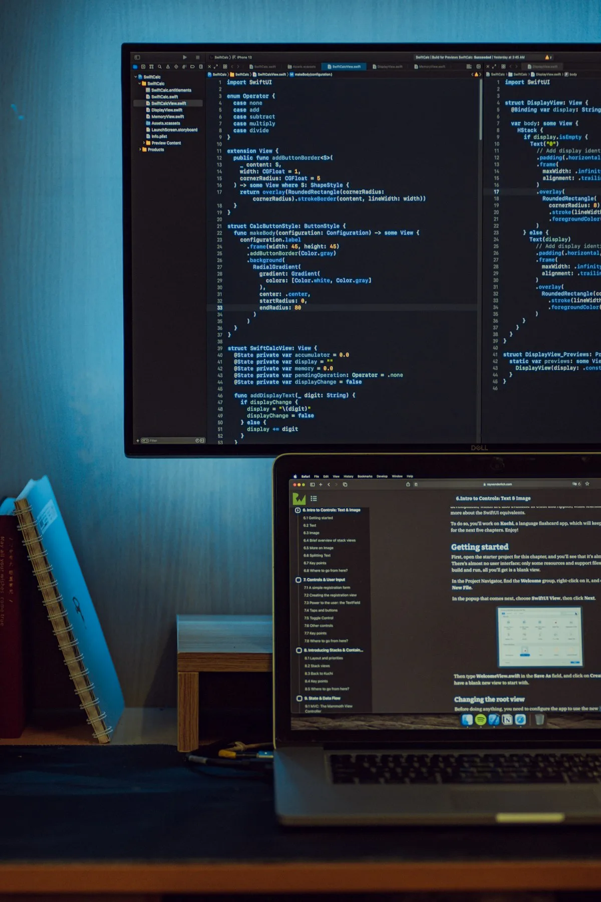

Everything we make follows a single continuous chain that begins with ore in the mountain and ends with an edge in the collector's hand. There are no shortcuts and no substitutions in this sequence.
The process takes between 6 and 18 months from commission confirmation to delivery — not because we are slow, but because each stage cannot be rushed without cost to the material.

Each spring after snowmelt, we walk specific veins in the Bernese Oberland that Erik Voldur mapped over three decades of prospecting. Ore samples are assayed for iron content, sulfur levels, and trace mineral composition. Only deposits with the specific alpine mineral profile meet our standard.
Alpine ore is smelted in our coal forge at 1,350–1,450°C. For Damascus pieces, the billet is folded between 64 and 128 times — each fold doubling the layer count and refining the grain structure. This stage takes three to five days of continuous forging for a single blade billet.
The blade profile emerges entirely from the hammer — never from abrasive grinding. Drawing out, beveling, and shaping the geometry by hand preserves the metal's grain flow, ensuring mechanical strength follows the functional line of the edge. This stage requires years of practice to execute correctly.
The blade is heated to critical temperature — where the steel ceases to be magnetic — and plunged into water drawn directly from glacial melt at 2–4°C. The extreme temperature differential and mineral composition of the glacial water create a martensitic transformation with hardness consistently exceeding that achievable by standard quench methods.
Final grinding, polishing, and edge finishing takes 30–40 hours per piece. Handle fitting — in elk antler, stabilized alpine burr, or carbon fiber — is done to the collector's specification. Every blade is signed, hallmarked, and registered in the Voldur permanent archive with full provenance documentation.
High-grade iron ore extracted from specific Bernese Oberland deposits above 1,800m. The elevated mineral context produces a steel with distinctive mechanical properties impossible to replicate from lowland sources.
Quench water drawn seasonally from glacial outflow channels near the forge site. The water temperature of 2–4°C and specific mineral content are irreplaceable components of the Voldur edge hardness process.
Handle wood sourced from storm-felled alpine ash above 1,600m. High-altitude growth produces denser, tighter-grained wood with superior shock absorption. Each handle blank is seasoned for two years before use.
Current wait list: 18 months. Commission pieces from CHF 4,800.
Begin the Conversation